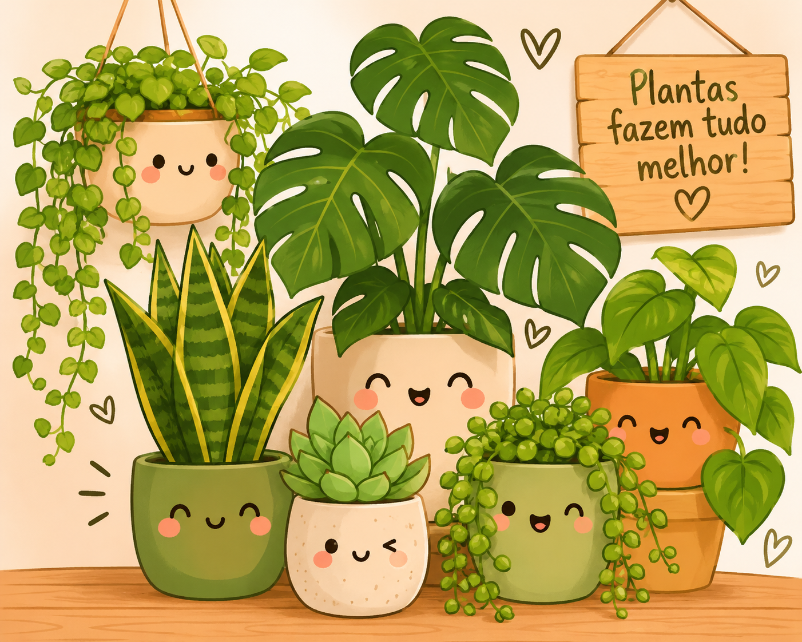
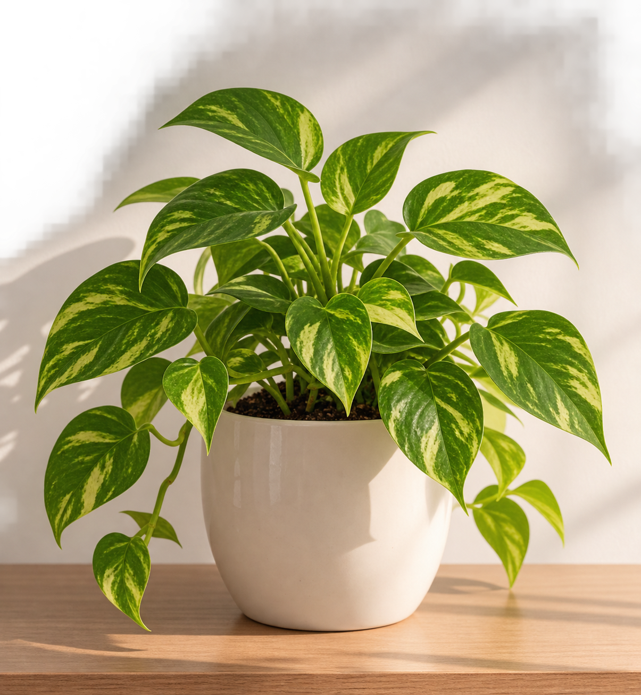

Tem muita coisa entalada?
Às vezes, tudo o que precisamos é de alguém que nos escute. E se esse alguém fosse uma planta? Aqui você pode reclamar, desabafar e contar tudo o que quiser. Sem julgamentos, interrupções ou fofocas!
Como funciona?
Desabafar nunca foi tão simples!
01. Escolha sua planta
Conheça nossas ouvintes e escolha aquela que mais combina com você.
02. Coloque para fora
Conte seus problemas, fale sobre seu dia ou reclame da vida!
03. Sem julgamentos!
Nossa planta vai ouvir tudo sem interromper ou contar para ninguém.

Sua nova melhor ouvinte está aqui!
Chega de guardar tudo para você. Nossas plantas estão prontas para receber seus desabafos. Afinal, elas podem até não responder, mas pelo menos não vão te interromper!
Ver catálogo